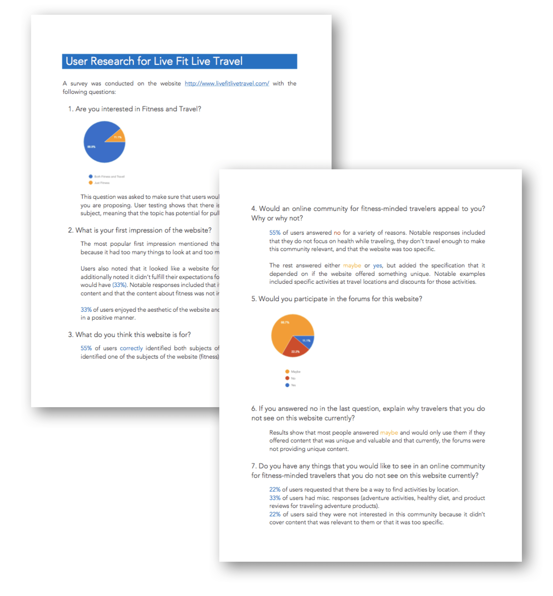
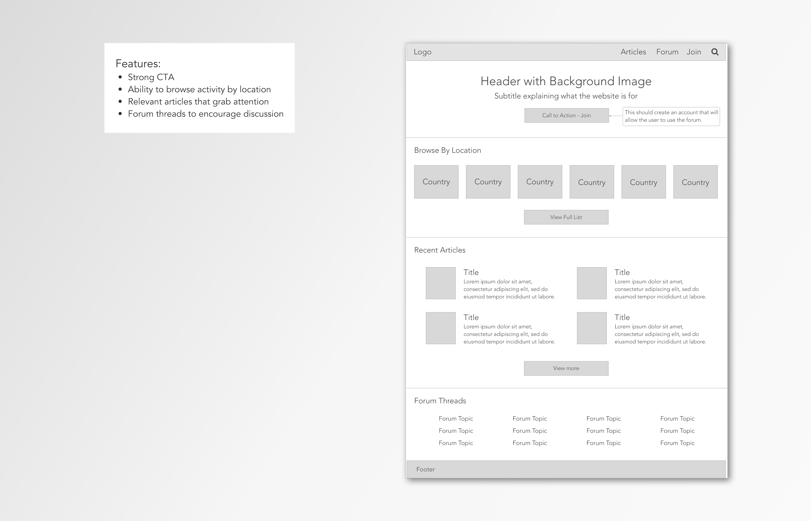

Live Fit Live Travel
Start Up - Research - Wireframes
Problem
Help the company improve the retention rate for their website and overall usability.
Process
I went through two rounds of user research to first identify the user that would use this application and how to hone the functionality towards the target audience the stakeholder had in mind. Both rounds included a findings report, personas, and actionable recommendations.
Results
The stakeholder initiated a major interface overhaul to adapt to the recommendations.

Consultation Objectives
Conduct user research to identify pain points.
Create personas based on findings.
Create a list of actionable recommendations that could be applied to the website.
Conduct another round of user research with business professionals.
Update personas and recommendations from new findings.

User Research
The user research for this client was conducted with user surveys, given the extremely limited budget of this client. I created the survey on Google Forms and utilized the r/SampleSize forum to get random respondents.
Original Findings
Remove distracting animations and simplify the landing page.
Focus the content on fitness activities that individuals can do while traveling and filter by location.
Moderate forums so that the content is valuable.
Create value by including discounts, product reviews, adventure activity reviews, group activity recommendations, and other specific content.
Persona: Julian Pierce
I created Julian by taking the majority opinions from the user research that would also engage with the fitness community that my client hoped to gather users for. Most people were looking for recommendations in specific locations, enjoyed fitness and travel for fun, and would want to use the forums to exchange opinions on specific activities while traveling abroad. From this concept, I created Julian, who wants to backpack around Europe and is looking for ideas of what to do while traveling.

Stakeholder's Feedback
The stakeholder found the information very insightful, but wanted to do a second round of user research as his target audience was for traveling business professionals. He hoped to get more insight into that specific demographic with a second round of user research.
Second Round of User Research
The second round of user research was done in a similar way to the first, but the audience was narrowed from people who like fitness and travel to people who travel for business.
Business Personas
I did three personas based on their motivations for traveling.
Drew Johnson, Software Engineer
Travels purely for business. Hopes to get tips on how to stay fit while maintaining a busy schedule.Annie Nguyen, Product Specialist
Travels for business, but enjoys exploring travel locations for fun. Hopes to find tips on how to stay fit while traveling, but is also interested in local recommendations.Andre Rodriguez, Photographer
Travels primarily to explore locations and for fun. Looking for hiking destinations to capture beautiful landscape photos.
Findings
Focus your website on content rather than community.
Do not pursue the "Find a Buddy" feature, as business people prefer solo exercise.
Pursue the idea of location specific recommendations.
Emphasize more popular execise activities